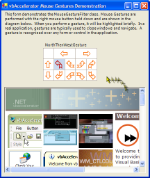
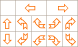

MouseGestures (154K)
MouseGestures (154K)
 23 Oct 2003
23 Oct 2003
First Posted

Adding Mouse Gesture Support to .NET Windows Applications
Enhancing usability in mouse-driven applications
Use of mouse gestures to control application is becoming increasingly common in the more sophisticated web browsers. This sample demonstrates how you can support a range of mouse gestures in .NET Windows Forms Applications by implementing an IMessageFilter. VB.NET and C# code provided.
About Mouse Gestures
Most Mac users would agree - having a right mouse button is a great thing. But you'll notice it doesn't get to do that much in Windows applications except popping up a context menu when its released. The idea of mouse gestures gives the button something more to do whilst its held down. The idea is that if you want a popup menu, you're unlikely to move the mouse significantly until you release the button. If you do, then the movement is a candidate to be interpreted as a "gesture".
In theory, you could have an unlimited number of gestures of arbitrary complexity, for example, recognising when someone draws out a picture of an octopus rather than a squid with the mouse. However, in practice gestures are most useful there aren't very many of them and they're nice and simple. The figure below shows some of the sort of gestures users find easy to get used to and aren't too challenging to recognise:
Simple Mouse Gestures
Even this set of gestures is more than you would normally want to support in a single application, as it is easy to forget how to draw a North then East gesture as opposed to East then North, unless you one of the alpha-males with the type of spacial intelligence all males of the species are supposedly automatically inbued with but somehow I never got. Typically, you might want to support the four main directions (left and right can represent back and next, whilst up and down can be used for closing and opening windows) and one or two of the compound gestures.
Message Loops and Their Uses
The .NET Framework System.Windows.Forms namespace includes one feature that I'd always wanted in VB: access to the Message Loop for an application.
All Windows applications include a single message loop. You can read more about the message loop in the MSDN C++ Q&A article "Sending Messages in Windows, Adding Hot Keys to your Application" by Paul DiLascia. Fundamentally, Windows applications work on the basis of messages. Whenever Windows tells your application its Window needs to be repainted, or when a mouse event occurs, a message is either sent or posted to your application. Messages that are sent are direct calls to the WndProc function of a particular Window and must be acted upon straight away. Messages that are posted are intended to be picked up whenever the application has time to process them, and are directed into a queue. A Windows application receives messages from this queue through its message loop function.
Since there is only one message loop for an application, it is a great place to pick up on messages regardless of which Window or Control they have been directed at. In the case of processing Mouse Gestures, this is a requirement since you normally want to be able to act on a Mouse Gesture regardless of which window or control the mouse is drawing over when the gesture occurs. The other thing about the message loop is that if you can filter out a message from the queue rather than dispatching it as normal then to the application it looks like the event never occurred.
Working with the Message Loop in .NET
The .NET Framework supports reading the Message Loop by writing an object which extends the IMessageFilter interface. This interface has one method, PreFilterMessage which provides you with the message that has just been received and you can return either false to continue processing the message or true to filter the message out.
To install the filter, you use the static (shared in VB.NET) AddMessageFilter method of the Application object. To uninstall it when you are finished, call corresponding RemoveMessageFilter method. Note that whilst the documentation is peppered with warnings about not doing too much in the message filter to prevent performance degradation, you don't really need to worry about this too much (obviously you don't want to search your hard drives for all MP3 files during each message, but realistically it shouldn't be a problem).
Implementing a MouseGesture recognizer
Given that information, implementing a MouseGesture has the following stages:
- Configure which gestures should be recognised.
- Create a message filter which looks for right-mouse button down events.
- Track the mouse position until the right-mouse button is released.
- If the tracking indicates that a gesture was performed, raise an event indicating the gesture occurred, and consume the mouse event so it doesn't result in the default right-mouse up action being performed.
Note there is a slight catch with the last stage. If you filter a mouse up message, Windows is thrown into a slight state of confusion since it still thinks the mouse is captured by the control or form the mouse was initially pressed over. This means it ignores the next mouse down. To resolve this, we need to tell Windows that the mouse has been released, but since we don't want it to cause a right-click action the mouse up needs to appear to occur outside the boundaries of the original control or form. Unfortunately, it is not possible to modify a message received through the message filter. The alternative performed here is to consume the original mouse up and then post a new one to the same window at an off-screen location.
Configuring Available Mouse Gestures
First, the available mouse gestures which can be recognized are configured as a series of flags so the class can be configured to only pick up certain gestures:
////// Enumerated flag values for the mouse gestures supported by /// the MouseGesture class. /// [FlagsAttribute()] public enum MouseGestureTypes : int { ////// No mouse gesture. /// NoGesture = 0x0, ////// Mouse Gesture move north /// NorthGesture = 0x1, ////// Mouse Gesture move south /// SouthGesture = 0x2, ////// Mouse Gesture move east /// EastGesture = 0x4, ////// Mouse Gesture move west /// WestGesture = 0x8, ////// Mouse Gesture move north-east /// NorthThenEastGesture = 0x10, ////// Mouse Gesture move south-east /// SouthThenEastGesture = 0x20, ////// Mouse Gesture move south-west /// SouthThenWestGesture = 0x40, ////// Mouse Gesture move north-west /// NorthThenWestGesture = 0x80, ////// Mouse Gesture move north-east /// EastThenNorthGesture = 0x100, ////// Mouse Gesture move south-east /// EastThenSouthGesture = 0x200, ////// Mouse Gesture move south-west /// WestThenSouthGesture = 0x400, ////// Mouse Gesture move north-west /// WestThenNorthGesture = 0x800, ////// All mouse gestures /// AllGestureTypes = 0xFFF } ////// The configured mouse gesture types /// private MouseGestureTypes gestureTypes = MouseGestureTypes.NoGesture; ////// Gets/sets the mouse gesture types to look for. /// public MouseGestureTypes GestureTypes { get { return this.gestureTypes; } set { this.gestureTypes = value; } }
Creating the Basic Filter
The basic filter checks the message for right button down, tracks the mouse movement when it is and checks the gesture when the mouse is released, as well as posting the mouse up if it is needed:
////// Whether we are checking for a gesture or not. /// private bool checkingGesture = false; ////// The recorded mouse gesture during gesture checking /// private MouseGestureTypes recordedGesture = MouseGestureTypes.NoGesture; ////// private ArrayList gesture = null; [DllImport("user32", CharSet = CharSet.Auto)] private extern static int PostMessage ( IntPtr hwnd, int wMsg, int wParam, int lParam); private const int WM_ACTIVATE = 0x6; private const int WM_RBUTTONDOWN = 0x204; private const int WM_MOUSEMOVE = 0x200; private const int WM_RBUTTONUP = 0x205; ///ArrayList of mouse points recorded during gesture. ////// Prefilters all application messages to check whether /// the message is a gesture or not. /// /// The Windows message to prefilter ///public bool PreFilterMessage( ref Message m ) { bool retValue = false; if (this.gestureTypes > 0) { if (this.checkingGesture) { if (m.Msg == WM_MOUSEMOVE) { AddToMouseGesture(); } else if (m.Msg == WM_RBUTTONUP) { retValue = EndMouseGesture(); if (retValue) { // Windows will skip the next mouse down if we consume // a mouse up. m cannot be modified, despite being byref, // so post a new one to a location which is offscreen: int offScreen = 0x7fff7fff; PostMessage(m.HWnd, WM_RBUTTONUP, (int)m.WParam, offScreen); } } else if (m.Msg == WM_ACTIVATE) { this.checkingGesture = false; } } else if (m.Msg == WM_RBUTTONDOWN) { BeginMouseGesture(); } } return retValue; } true if the message should be filtered (was a /// processed gesture),false otherwise.
BeginMouseGesture simply initiates the gestures ArrayList to a new instance and sets the tracking flag whilst AddToMouseGesture adds the mouse position to gestures.
Implemented Gesture Recognition
The last step is to determine which mouse gesture was performed. The code does this by detecting how far the mouse moved horizontally and vertically, then checking whether most of the travel occurred vertically or horizontally during that motion:
///
/// Detects whether the specified gesture was a mouse gesture or not.
///
/// True if a gesture was performed.
private bool EndMouseGesture()
{
this.checkingGesture = false;
bool retValue = false;
// add the end point:
gesture.Add(Cursor.Position);
// get start and end:
Point first = (Point) gesture[0];
Point last = (Point) gesture[gesture.Count - 1];
// check which directions we register a change in:
int xDiff = first.X - last.X;
int yDiff = first.Y - last.Y;
bool north, south, east, west;
north = south = east = west = false;
if (Math.Abs(yDiff) > DEFAULT_HYSTERESIS_PIXELS)
{
north = (yDiff > 0);
south = !north;
}
if (Math.Abs(xDiff) > DEFAULT_HYSTERESIS_PIXELS)
{
west = (xDiff > 0);
east = !west;
}
// check for very narrow angles as these are probably not compound gestures
if ((north || south) && (east || west))
{
if (Math.Abs(xDiff) > Math.Abs(yDiff))
{
if ((Math.Abs(xDiff) / (Math.Abs(yDiff) * 1.0)) > 7.0)
{
north = south = false;
}
}
else
{
if ((Math.Abs(yDiff) / (Math.Abs(xDiff) * 1.0)) > 7.0)
{
east = west = false;
}
}
}
recordedGesture = MouseGestureTypes.NoGesture;
if (north || south)
{
if (east || west)
{
// compound gesture:
recordedGesture = interpretCompoundGesture(
first, last, north, south, east, west);
}
else
{
// pure vertical gesture:
if (north)
{
recordedGesture = MouseGestureTypes.NorthGesture;
}
else
{
recordedGesture = MouseGestureTypes.SouthGesture;
}
}
}
else if (east || west)
{
// pure horizontal gesture
if (east)
{
recordedGesture = MouseGestureTypes.EastGesture;
}
else
{
recordedGesture = MouseGestureTypes.WestGesture;
}
}
if (recordedGesture != MouseGestureTypes.NoGesture)
{
if ((gestureTypes & recordedGesture) != 0)
{
MouseGestureEventArgs args = new MouseGestureEventArgs(
recordedGesture, first, last);
if (this.MouseGesture != null)
{
this.MouseGesture(this, args);
retValue = args.AcceptGesture;
}
}
}
return retValue;
}
private MouseGestureTypes interpretCompoundGesture(
Point first, Point last,
bool north, bool south, bool east, bool west)
{
MouseGestureTypes retValue = MouseGestureTypes.NoGesture;
// draw a diagonal line between start & end
// and determine if most points are y above
// the line or not:
int pointAbove = 0;
int pointBelow = 0;
foreach (Point point in gesture)
{
int diagY = ((point.X - first.X) * (first.Y - last.Y)) /
(first.X - last.X) + first.Y;
if (point.Y > diagY)
{
pointAbove++;
}
else
{
pointBelow++;
}
}
if (north)
{
if (east)
{
if (pointAbove > pointBelow)
{
retValue = MouseGestureTypes.EastThenNorthGesture;
}
else
{
retValue = MouseGestureTypes.NorthThenEastGesture;
}
}
else
{
if (pointAbove > pointBelow)
{
retValue = MouseGestureTypes.WestThenNorthGesture;
}
else
{
retValue = MouseGestureTypes.NorthThenWestGesture;
}
}
}
else if (south)
{
if (east)
{
if (pointAbove > pointBelow)
{
retValue = MouseGestureTypes.SouthThenEastGesture;
}
else
{
retValue = MouseGestureTypes.EastThenSouthGesture;
}
}
else
{
if (pointAbove > pointBelow)
{
retValue = MouseGestureTypes.SouthThenWestGesture;
}
else
{
retValue = MouseGestureTypes.WestThenSouthGesture;
}
}
}
return retValue;
}
This code typically generates the correct results. A better alternative to the deterministic algorithms shown above would be to use Fuzzy Logic to determine which gesture was the most likely. This is the subject of a future article, in the meantime information about implementing Fuzzy Logic please go to CodeProject and search on the author "pseudonym67".
Using the MouseGestureFilter class
The demonstration application shows how to use the filter. Basically you need code that instantiates the class, installs the filter and responds to the MouseGesture event:
using vbAccelerator.Components.Win32;
MouseGestureFilter mgf = new MouseGestureFilter();
Application.AddMessageFilter(mgf);
mgf.MouseGesture += new MouseGestureEventHandler(
frmMouseGesture_MouseGesture);
private void frmMouseGesture_MouseGesture(
object sender,
MouseGestureEventArgs args)
{
// Process the gesture here, args.GestureType contains
// the gesture that was performed.
args.AcceptGesture = true;
}
Conclusion
This article provides a reusable class you can add to your application for recognising Mouse Gestures. It also demonstrates how you can use the Message Loop to process mouse events regardless of which form or control they are intended for, which can be a very useful technique.